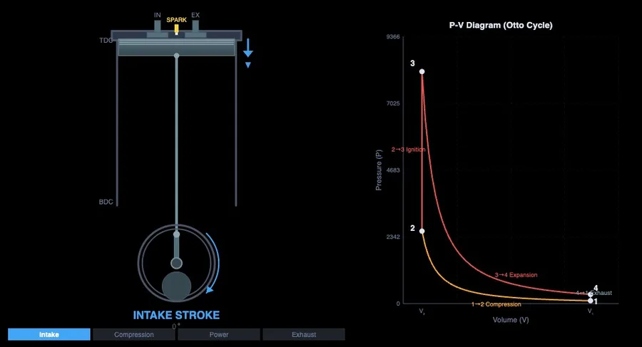

Four-Stroke Engine Cycle Explained — Otto, Diesel, and the PV Diagram

- The four-stroke cycle runs in order — intake (piston down, inlet valve open), compression (both valves closed, piston up), power (combustion drives the piston down), and exhaust (exhaust valve open, piston up) — completing one power cycle every two crankshaft revolutions.
- The Otto cycle uses spark ignition with constant-volume combustion (compression ratio ~8–12:1), while the Diesel cycle uses compression ignition with constant-pressure combustion (~14–22:1), giving Diesel higher theoretical efficiency.
- Otto cycle thermal efficiency is η = 1 − 1/r^(γ−1), where r is the compression ratio and γ ≈ 1.4; at r = 10 the ideal efficiency is about 60%, though real petrol engines reach 25–35%.
Most students who have studied internal combustion engines can recite the four strokes in order. Intake, compression, power, exhaust — that part comes easily. What's harder is the connection between those strokes and the PV diagram, the valve timing chart, and the thermal efficiency formula. The animation on the board shows the piston moving, but it doesn't show the pressure building or the work being done. That's the gap.
The four-stroke engine simulator closes it by running all three representations — piston animation, PV diagram, and valve timing — simultaneously, so students can see exactly what's happening at every crank angle.
The Four Strokes — What's Actually Happening Inside
Intake stroke. The piston starts at TDC (Top Dead Centre) and moves down toward BDC. The inlet valve is open, the exhaust valve is closed. As the piston descends, cylinder volume increases and pressure drops below atmospheric, drawing in the air-fuel mixture (Otto) or just air (Diesel). By the time the piston reaches BDC, the cylinder is full. The inlet valve closes.
Compression stroke. Both valves are now closed. The piston moves back up from BDC to TDC, compressing the charge. Pressure and temperature rise significantly. In a petrol engine (Otto cycle), compression ratio is typically 8:1 to 12:1 — the mixture is compressed to about one-tenth its original volume. In a Diesel engine, ratios of 14:1 to 22:1 are common, which is why Diesel engines don't need a spark plug — the temperature at the end of compression is high enough to auto-ignite the fuel.
Power stroke. This is the one that does actual work. In the Otto cycle, the spark fires near TDC. The burning mixture releases energy rapidly, raising pressure sharply while the piston is still near the top. The high-pressure gases push the piston down — this is where the PV diagram shows its widest pressure range and the loop area (work done) is largest. In the Diesel cycle, fuel is injected and burns more gradually as the piston descends, giving a constant-pressure heat addition rather than the constant-volume spike of the Otto cycle.
Exhaust stroke. The exhaust valve opens just before BDC. As the piston moves back up, it sweeps the burnt gases out of the cylinder. Pressure drops back toward atmospheric. At TDC, the exhaust valve closes and the inlet valve opens — and the cycle begins again.
Two crankshaft revolutions for one complete power cycle. Every other downstroke is the power stroke; everything else is overhead.
| Stroke | Piston direction | Inlet valve | Exhaust valve | Combustion state |
|---|---|---|---|---|
| Intake | TDC → BDC (down) | Open | Closed | Charge drawn in (air-fuel for Otto, air for Diesel) |
| Compression | BDC → TDC (up) | Closed | Closed | Charge compressed; pressure and temperature rise |
| Power | TDC → BDC (down) | Closed | Closed | Ignition & expansion — gas pressure does work on the piston |
| Exhaust | BDC → TDC (up) | Closed | Open | Burnt gases swept out; pressure returns to atmospheric |

Otto vs Diesel — Same Strokes, Different Combustion
Both cycles use the same four physical strokes. The fundamental difference is what happens at the end of the compression stroke.
In the Otto cycle, a spark ignites the premixed air-fuel charge near TDC. Combustion is fast — essentially instantaneous on the timescale of engine events — so the heat addition happens at approximately constant volume (isochoric). The PV diagram shows a near-vertical pressure spike at minimum volume. Thermal efficiency: \(\eta = 1 - \dfrac{1}{r^{\gamma-1}}\), where r is compression ratio and γ ≈ 1.4 for air. At r = 10, η ≈ 60% (ideal). Actual petrol engines manage 25–35% after accounting for real-world losses.
In the Diesel cycle, only air is compressed. Fuel is injected at TDC and ignites by contact with the hot compressed air. Combustion takes longer because fuel and air mix as they burn — the heat addition happens at approximately constant pressure (isobaric). The PV diagram shows a flatter, wider loop at the top. Diesel thermal efficiency: \(\eta = 1 - \dfrac{1}{r^{\gamma-1}} \cdot \dfrac{r_c^{\gamma} - 1}{\gamma(r_c - 1)}\), where \(r_c\) is the cutoff ratio (volume at end of combustion / volume at TDC). Higher compression ratios mean Diesels run more efficiently than equivalent Otto cycle engines, which is why heavy transport vehicles use Diesel almost universally.
The simulator lets you toggle between Otto and Diesel modes and watch how the PV loop shape changes. That visual comparison is worth a hundred lines of lecture notes.
Reading the PV Diagram — Area Is Work
The PV diagram might be the single most information-dense graph in all of engineering thermodynamics, and students who learn to read it properly have a significant advantage in exam questions and real-world analysis.
The area enclosed by the closed loop is the net work done per cycle. Bigger loop area = more work output. The curve from BDC to TDC on the left side of the loop is the compression stroke — work is being done on the gas (the curve moves from high volume to low volume). The curve from TDC back to BDC on the right side is the power stroke — work is being done by the gas. The net area between these curves is the useful work extracted.
Increasing compression ratio stretches the diagram vertically — higher peak pressure and higher expansion ratio, more area, more work. That's why modern engines push as high a compression ratio as the fuel's knock resistance will allow.
The two thin lines at the top and bottom of the diagram represent the exhaust and intake strokes at approximately atmospheric pressure. In a naturally aspirated engine these contribute very little area (some negative pumping work during exhaust). In a turbocharged engine, the inlet pressure is raised above atmospheric — the intake line moves up, adding positive area and increasing the loop's net work.
Valve Timing — Why the Valves Don't Open and Close at Exactly TDC and BDC
Real engines don't open and close valves precisely at TDC and BDC — the timing is offset to account for the time it takes gases to accelerate and the momentum they carry. This is valve timing, and it matters more than most students realise.
The inlet valve opens a few degrees before TDC (during the exhaust stroke) so it's already open when the piston starts descending. This is called inlet valve opening (IVO). It closes some degrees after BDC — the mixture is still flowing in due to inertia even though the piston has started moving back up. The overlap between inlet and exhaust valve open periods at TDC is used in performance engines to help scavenge exhaust gases using the incoming charge's momentum.
The exhaust valve opens before BDC — early enough that most of the pressure has escaped by the time the piston starts the exhaust stroke, reducing pumping losses. The simulator's valve timing chart shows all of this as a function of crank angle, making it far easier to understand than a static diagram with overlapping arcs.
Using the Simulator for Engine Theory Lessons
The Four-Stroke Engine simulator has proved particularly useful for the kind of question that always comes up in engine theory: "If we increase the compression ratio, what happens to efficiency, peak pressure, and the shape of the PV diagram?" On a whiteboard, answering that question requires drawing a new diagram. In the simulator, you move a slider.
A lesson structure that works well: start by running the engine in animation mode at a moderate compression ratio. Pause at each TDC and BDC position and ask students to identify which stroke just completed. Then switch to the PV diagram view and trace the cycle again, mapping each part of the curve to the physical stroke. Then use the compression ratio slider to show efficiency change. Finally, toggle to Diesel mode and compare the loop shapes side-by-side.
That sequence takes about 20 minutes and covers what would typically require three separate lecture slides, two drawn diagrams, and considerably more explaining.
The thermodynamics cycles simulator covers Carnot, Brayton, and Rankine cycles with the same PV diagram approach — a useful follow-up for students who want to see how engine cycles fit into the broader framework of thermodynamic cycle analysis.
Try It Yourself
- Four-Stroke Engine Simulator — Piston animation, PV diagram, and valve timing chart — Otto and Diesel modes with adjustable compression ratio and thermal efficiency readout.
- Thermodynamics Cycles — Carnot, Otto, Diesel, and Brayton cycles with interactive PV diagrams, efficiency calculations, and cycle comparison.
- Two-Stroke Engine Simulator — Port timing, crankcase compression, scavenging animation, and PV diagram for the two-stroke cycle — compare directly with four-stroke.
Key Takeaways
- The four strokes are intake (inlet valve open, piston down), compression (both valves closed, piston up), power (combustion pushes piston down), and exhaust (exhaust valve open, piston up). Two crankshaft revolutions per cycle.
- Otto cycle uses spark ignition with constant-volume combustion. Diesel uses compression ignition with constant-pressure combustion. Higher Diesel compression ratios give higher theoretical efficiency.
- The area enclosed by the PV loop is net work per cycle. Larger loop = more power output. Increasing compression ratio expands the loop area.
- Otto cycle thermal efficiency: η = 1 − 1/r(γ−1). At r = 10, ideal efficiency ≈ 60%; real petrol engines achieve 25–35% after losses.
- Valve timing is intentionally offset from TDC/BDC to account for gas inertia and to optimise flow. Overlap between inlet and exhaust timing aids scavenging in performance engines.
- Watching the piston animation, PV diagram, and valve timing chart simultaneously makes cycle events physically meaningful in a way that static diagrams alone cannot achieve.
Frequently Asked Questions
What are the four strokes of a four-stroke engine?
Intake (piston down, inlet valve open), Compression (both valves closed, piston up), Power (combustion pushes piston down, both valves closed), Exhaust (exhaust valve open, piston up). The cycle takes two crankshaft revolutions to complete.
What is the difference between the Otto cycle and the Diesel cycle?
Otto cycle uses spark ignition with constant-volume heat addition (sharp PV spike). Diesel uses compression ignition with constant-pressure heat addition (flatter PV curve). Diesel runs at higher compression ratios (14–22:1 vs 8–12:1) and generally achieves higher thermal efficiency at the same compression ratio.
How do you calculate the thermal efficiency of the Otto cycle?
η = 1 − (1/rγ−1), where r = compression ratio and γ ≈ 1.4. At r = 10: η ≈ 60% (ideal). Real petrol engines achieve 25–35% after friction, heat loss, and combustion inefficiencies.
Why does the PV diagram matter for engine performance?
The area enclosed by the PV loop equals the net work per cycle. Larger area = more power. The diagram shows which strokes consume work (compression) and which produce it (power stroke), and reveals the effect of changing compression ratio or combustion type.
What is TDC and BDC in a four-stroke engine?
TDC (Top Dead Centre) is the highest piston position — minimum cylinder volume. BDC (Bottom Dead Centre) is the lowest — maximum volume. Compression ratio = volume at BDC / clearance volume at TDC.
The four-stroke cycle is one of those topics that looks simple on the surface and reveals depth the more closely you examine it. The strokes themselves are easy to memorise; understanding why the PV diagram has the shape it does, and what changing the compression ratio does to that shape, is the deeper understanding that separates someone who has studied engines from someone who actually knows them. The simulator makes that depth accessible in a way a textbook diagram simply can't.